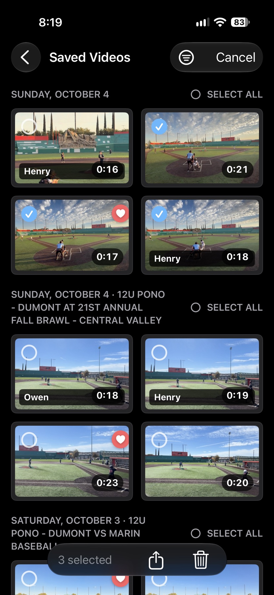
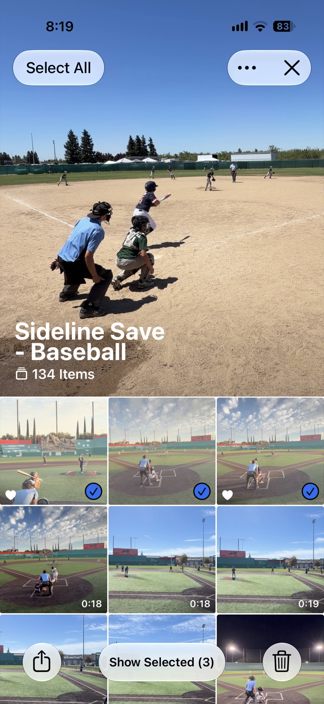
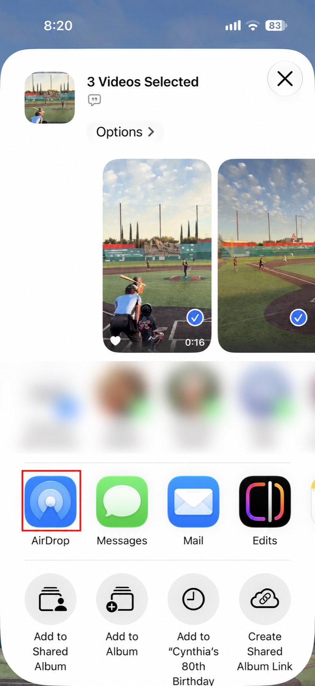

Sideline Save keeps this manageable by saving short clips around the action. The videos are already focused on the moment, so you do not have to edit or trim each one before sending it to another family.
Share from Sideline Save when the connection is good
Open a saved video and tap Share to bring up the iOS share sheet. To send several clips, tap Select, choose the videos, then tap the share button at the bottom. This works well when you have strong Wi-Fi or the videos have already finished uploading to iCloud Photos.
If the clips have not uploaded through Photos yet, sending them directly can be slower for the recipient. They may not see a thumbnail right away, and playback may have to wait while the video uploads from your phone and downloads on theirs.

Use Photos when you are on cellular data
Sideline Save saves your clips to Photos in albums organized by sport. You can open the Sideline Save album for that sport and share from Photos without exporting the videos first.
Photos handles partially uploaded videos differently from a regular file attachment. In my experience, recipients on iPhone can often see a preview sooner and start watching before the whole video has finished uploading or downloading. That makes Photos a better choice when you are at the field without Wi-Fi and want another parent to watch soon.
Sideline Save also lets you tag clips with a player’s name and filter by that player. If you are sending videos to one family, filter to their player first so it is easier to pick the right clips.

Team apps are convenient, but uploads can take time
You can upload a video into a GameChanger conversation or another team app like any other attachment. It is convenient when the team already shares updates there, but an upload may take a while on a weak connection. The service may also compress the video, so the recipient gets lower quality. Starting separate messages for individual parents can become cumbersome, too.
Text when the parent is not nearby
If the recipient is not standing nearby or does not have an iPhone, texting the clip is the most portable option. They can open it from the messaging app they already use, wherever they are. If the video is slow to send over cellular or arrives compressed, wait until you have Wi-Fi or share it through the team’s usual conversation.
AirDrop is great for a nearby iPhone
When the recipient has an iPhone and is standing nearby, AirDrop is often the best option. It sends the video directly between phones, so you do not need a strong cellular connection to transfer the original at full quality.
Open the share sheet from Sideline Save or Photos and choose AirDrop. If you are in each other’s contacts and have supported iPhones with iOS 17 or later, bringing the tops of the phones close together can start the transfer. I have found it helps if the recipient keeps their phone unlocked. They may need to tap Accept; then watch the transfer indicator at the top of your screen until it finishes. After that, the recipient has their own copy, so deleting yours later will not affect theirs.
AirDrop has a reputation for being finicky, but I have found it reliable at a game. You do not need to keep the phones together for the entire transfer; wait for the sender’s progress indicator to show completion before you head back to the stands. See Apple’s AirDrop instructions for device and receiving settings.

Pick the method that fits the moment
Use Sideline Save’s share sheet when the connection is strong or the clips are already synced. Use Photos when an iPhone recipient needs to start watching while a video is still syncing. Use AirDrop when you are together and want a direct, full-quality transfer. Text the clip when the parent is not nearby or does not have an iPhone. A team app works when the clip belongs in the team conversation and you can wait for the upload.
Being the person who captures the play can also make you the person who helps the whole team relive it. Sideline Save keeps the good moments short and ready to share.
Share thoughtfully
If a clip is for a particular player, send it to that player’s parents. When both parents want the video, include them both in the message so neither has to forward it.
Be thoughtful about who can see a shared clip, especially when other children appear in it. Before posting a photo or video publicly online, get consent from the parents of the children shown.